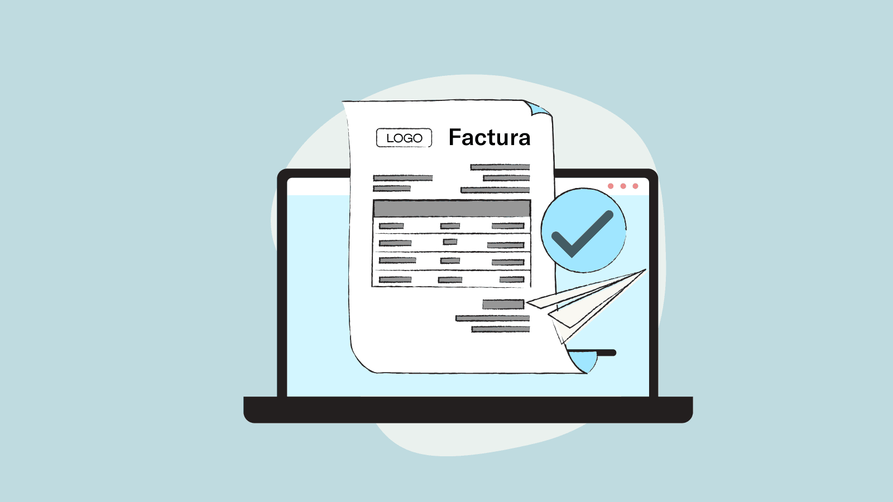

APTOPS esta pensado y diseñado para profesionales de la salud

GESTION DE TURNOS Y PACIENTES
HISTORIAL CLINICO

GESTION Y SEGUIMIENTO DE FACTURACION
Plan basico
Gestion de turnos y pacientes
Gestion de historias clinicas y evolutivas
Hasta 3 tests y/o escalas estandarizadas (solo terapistas ocupacionales)
Hasta 10 pacientes
Plan Intermedio
Gestion de turnos y pacientes
Gestion de historias clinicas y evolutivas
Hasta 5 tests y/o escalas estandarizadas (solo terapistas ocupacionales)
Hasta 20 pacientes
Plan Premium
Gestion de turnos y pacientes
Gestion de historias clinicas y evolutivas
Hasta 10 tests y/o escalas estandarizadas (solo terapistas ocupacionales)
Hasta 50 pacientes